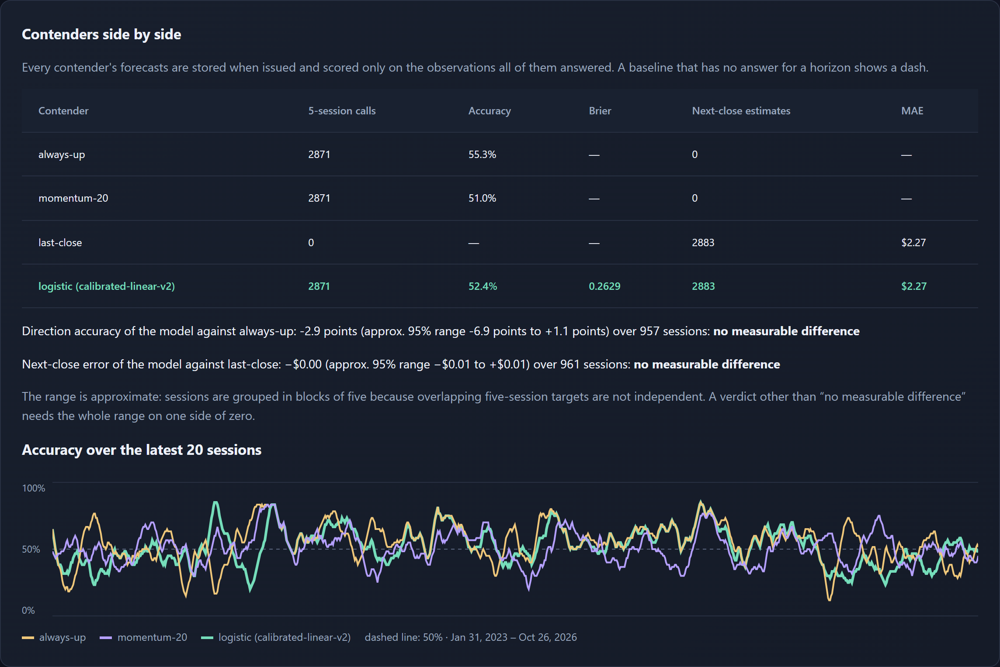
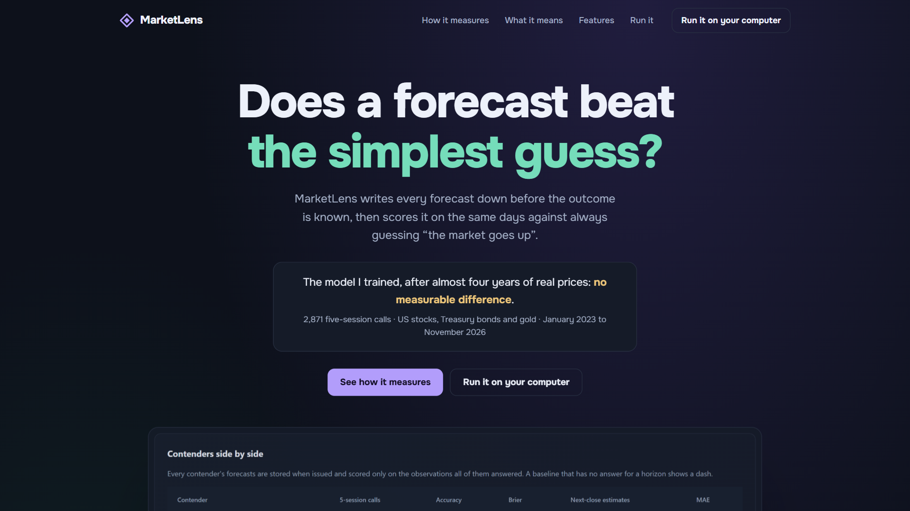
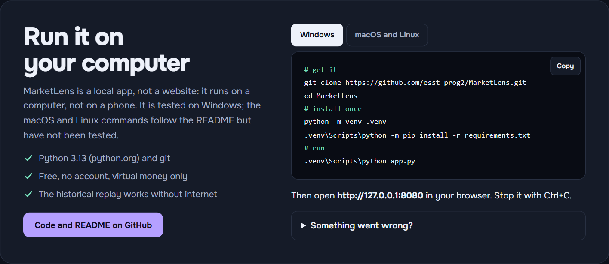
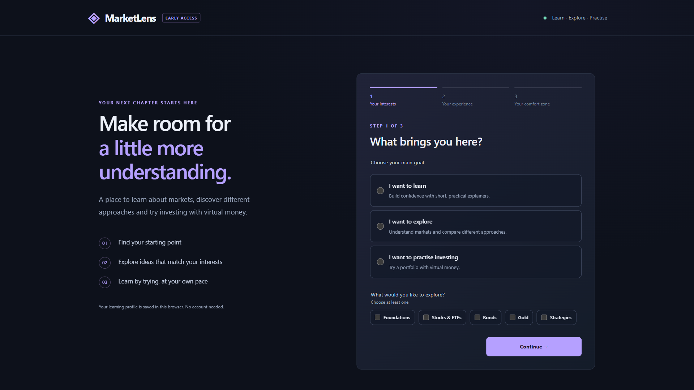

MarketLens · a free practice app for beginners
Does a forecast beat
the simplest guess?
Real market prices. Virtual money only. No account.

It writes every forecast down first, then checks it
My model vs. “always guess up”, 2023–2026:
no measurable difference.

On the web page, use the menu at the top
How it measures · What it means · Features ·
Run it

To open it on a Windows computer
1
Press Copy
2
Paste into PowerShell
3
Open 127.0.0.1:8080

Your first screen. Then learn, explore and practise.
esst-prog2.github.io/MarketLens